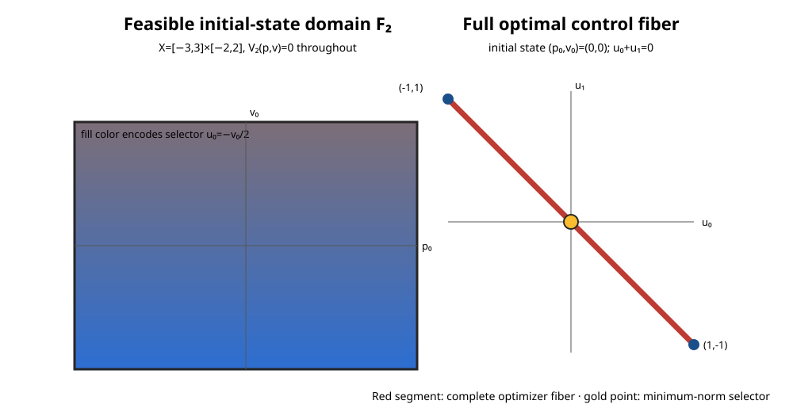

MPC-08 · exact rational continuation · report source 18cb292735a0 · measured source 7bea429642b1
A nonunique optimal control family
For this two-step double integrator, terminal velocity can be driven to zero from every state in the declared initial domain. The optimizer is a segment for many initial velocities, so one explicit tie-break is only a selector through the full optimal relation.

Exact result
p_next=p+v, v_next=v+u, u0,u1∈[-1,1]. Over (p0,v0)∈[-3,3]×[-2,2], the exact minimum of (v0+u0+u1)² is zero.
u0∈[-1,1]∩[-v0-1,-v0+1] and u1=-v0-u0 give the complete analytic control fiber. Minimizing u0²+u1² selects u0=u1=-v0/2.
The figure's left color field encodes the tie-broken first action over the entire initial domain. At (p0,v0)=(0,0), the right red segment is the whole optimizer fiber and the gold point is its minimum-norm selector.
Current CSL paths
| Path | Measured calls | Median | Range | Outcome over all 270 calls, including warmups |
|---|---|---|---|---|
| csl.synthesis.reach-back | 225 | 5.024 ms | 4.803–6.133 ms | 270 candidates contain samples; all 270 stop at a rejected degenerate QP |
| csl.synthesis.strategy-b | 225 | 0.501 ms | 0.386–1.007 ms | 270 candidates contain samples; 252 completed, 18 noncompleted; all outcomes undetermined |
| online-condensed-qp | 225 | 0.337 ms | 0.309–0.469 ms | 270 online solves return feasible optimal points with exact value zero |
Each path also had one warmup per query. Elapsed time starts before query-specific problem resolution and ends after result verification. Strategy A/B includes request construction, provider preparation, workspace creation, execution, and candidate-family membership checking. The online QP includes resolution, condensed-program construction, provider selection/preparation, workspace creation, solving, and primal feasibility/value checks. All paths exclude process startup, CSV parsing, registry construction, JSON serialization, rendering, and build time. The paths do different work; no performance winner is claimed.
The 45 exact histories are sampled checks. Candidate membership does not establish equality or completeness. Strategy A rejects the rank-deficient QP request; Strategy B leaves its mathematical outcome undetermined. The condensed QP returns one feasible optimal point, not the complete family. Failures and noncompleted statuses remain in the raw records. No limiter or pre-run load was captured, so these descriptive timings do not support a performance-winner claim.